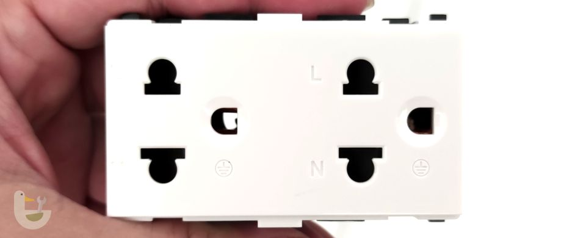

ทำไมถึงต่อสายดินกับสายนิวทรัลเข้าด้วยกัน?

จากข้อสงสัยส่วนตัวเวลามาดูวิธีการต่อสายดิน (Ground wire) เข้ากับสายนิวทรัล (Neutral) แล้วนำสายไปต่อกับแท่งกราวน์ (Ground rod - แท่งหลักดิน) ที่เป็นแท่งโลหะตอกลงไปในดินอีกที เลยสงสัยว่าแบบนี้จะมีสายดินไปทำไม ก็ในเมื่อมันก็เอาไปต่อรวมกับสายนิวทรัลอยู่ดี คืองงพอสมควร ในหัวคิดว่าแบบนี้ก็ไม่ต้องต่อสายดิน (สายสีเขียว) เพิ่มก็ได้ รูสายดินที่เต้าเสียบก็ต่อกับสายนิวทรัลไปเลยสิ จะมาเดินอีกเส้นทำไม?
แต่ก็รู้ล่ะว่ามันต้องมีเหตุผลเขาถึงเดินกันแบบนี้ เลยไปหาข้อมูลมาเลยเข้าใจว่ามันแยกมามีจุดประสงค์อะไร และมันมีประโยชน์ตอนไหนบ้าง หลายอย่างที่เคยรู้มาว่าสายดินช่วยกันไฟรั่ว จริง ๆ แล้วมันไม่ใช่อย่างที่คิด เรามาดูกันว่าทำไม
ธรรมชาติของไฟฟ้า
ก่อนอื่น ควรทราบว่าธรรมชาติของไฟฟ้ามันมีพฤติกรรมอย่างไร เพื่อให้เข้าใจว่าทำไมถึงจำเป็นต้องมีสายดิน
- กระแสไฟฟ้า จะวิ่งได้ก็ต่อเมื่อ มีการต่อสายไฟจากแหล่งกำเนิดไฟ ผ่านสาย L (Live) ไปยังเครื่องใช้ไฟฟ้า และต่อสายกลับมาที่แหล่งกำเนิด ผ่านสาย N (Neutral) เพื่อให้ครบวงจร
เช่น การต่อหลอดไฟ กับถ่านไฟฉาย ต้องต่อสายไฟจากขั้วบวกและลบเข้ากับหลอดไฟ หลอดถึงจะสว่าง - กระแสไฟฟ้า จะวิ่งในเส้นทางที่สะดวกที่สุดเพื่อกลับไปยังแหล่งกำเนิดไฟฟ้า (เส้นทางที่ความต้านทานต่ำสุด)
การต่อสายไฟจากแหล่งกำเนิดเข้าบ้าน
ในประเทศไทยใช้ไฟฟ้ากระแสสลับ แรงดัน 220 โวลท์ 50 เฮิร์ท โดยไฟจากโรงผลิตไฟฟ้าจะมีแรงดันสูง จึงต้องผ่านหม้อแปลงก่อน แล้วถึงเข้ามิเตอร์ไฟฟ้าแล้วต่อเข้าบ้าน
โปรดสังเกตุ → หม้อแปลงจะมีการต่อสายดินเข้ากับสายสายนิวทรัล
- สาย Live (หรือสาย Hot) เป็นสายที่มีกระแสไฟฟ้า ส่งมาจากหม้อแปลง ต่อไปขอเรียกว่า สาย L
- สาย Neutral เป็นสายที่ไม่มีกระแสไฟฟ้า ใช้สำหรับวิ่งกลับไปที่หม้อแปลง เพื่อให้ครบวงจร ต่อไปขอเรียกว่าสาย N
- สาย Ground หรือสายดิน เป็นสายที่ช่วยป้องกันการถูกไฟดูดจากปัญหาไฟรั่ว ต่อไปขอเรียกว่า สาย G
การต่อสายดินที่ตู้เบรคเกอร์และเครื่องใช้ไฟฟ้า
ในการต่อสายดิน G จะเห็นว่าจะเอาไปต่อรวมกับสาย N และต่อสายไปยังแท่งหลักดิน สายนี้จะเดินต่อมายังเต้าเสียบไฟที่เป็นรูตรงกลาง เมื่อเสียบปลั๊กเครื่องใช้ไฟฟ้า สาย G จะถูกนำไปต่อกับโครงที่เป็นโลหะของเครื่องใช้ไฟฟ้า ดังนั้น...ถ้าเครื่องใช้ไฟฟ้าโครงเป็นพลาสติก → สาย G แทบจะไม่มีประโยชน์อะไรเลย
ตัวอย่างเครื่องใช้ไฟฟ้าที่มีโครงเป็นโลหะ เช่น เครื่องซักผ้า ตู้เย็น เตาไมโครเวฟ คอมพิวเตอร์ส่วนบุคคล เครื่องทำน้ำร้อน
(ภาพจาก reddit.com)
ไฟรั่ว! สายดินช่วยตอนไหน
ไฟรั่วคืออะไร ไฟรั่วเกิดจากความผิดพลาดของวงจรไฟฟ้า ในสภาวะปกติไฟจะวิ่งจากสาย L เข้าวงจรไฟฟ้า กลับทางสาย N เพื่อให้ครบวงจร แต่ไฟรั่วเกิดจากวงจรไฟฟ้ามีปัญหาทำให้กระแสไฟฟ้าบางส่วนสามารถเล็ดรอดและรั่วไหลออกมาที่ตัวโครงโลหะของเครื่องใช้ไฟฟ้าที่สัมผัสกับวงจรไฟฟ้าดังกล่าวได้ ปกติจะรั่วในปริมาณที่กระแสไม่มาก
ไฟรั่วแบบไม่มีสายดิน
ในกรณีที่ไม่มีสายดิน ไฟฟ้าที่สามารถรั่วออกมา มันไม่ได้ไปไหน ไม่ได้ทำอะไร เพราะมันไม่ครบวงจร มันไม่มีทางอื่นที่ดีกว่านอกจากวิ่งกลับทางสาย N เท่านั้น แต่เมื่อคุณไปสัมผัสกับโครงที่เป็นโลหะของเครื่องใช้ไฟฟ้าโดยที่เท้าเหยียบพื้น ไฟที่พร้อมจะรั่วก็จะใช้ตัวมนุษย์วิ่งลงดินเพื่อกลับไปที่แหล่งกำเนิดไฟฟ้า(ในที่นี่คือหม้อแปลงไฟ) ส่วนความเชื่อที่บอกว่าไฟดูดเพราะไฟฟ้ามันต้องการลงดินนั้นไม่ถูกต้อง ไฟฟ้าต้องกลับไปที่แหล่งกำเนิดไฟฟ้าเท่านั้นถึงจะครบวงจร แล้วไฟฟ้ากลับไปยังแหล่งกำเนิดไฟฟ้าได้ยังไง? ตัวเราไม่มีสายต่อไปยังหม้อแปลงสักหน่อย? → "พื้นดิน" คือคำตอบ
ผมก็สงสัยต่อว่า หากหม้อแปลงไฟฟ้าที่เป็นแหล่งกำเนิดคือจุดหมายปลายทางของกระแสไฟฟ้าที่รั่ว โดยเดินทางผ่านตัวเรา → ดิน → หม้อแปลง ซึ่งดินมีความต้านไฟฟ้าสูงกว่าสายไฟมาก แบบนี้มันก็น่าจะมีกระแสไฟฟ้าผ่านไปได้น้อย แล้วทำไมคนถึงโดนไฟดูดได้ล่ะ เลยไปค้นข้อมูลมาพบว่า
- กระแสไฟฟ้าเพียง 0.001A จะเริ่มรู้สึกว่าถูกไฟดูด
- กระแสไฟฟ้าเพียง 0.005A จะทำให้กระตุก
- หากสูงถึง 0.010-0.030A สามารถทำให้คนเจ็บปวดและหัวใจเต้นผิดปกติ
- ถ้า 0.100A ถึงตายได้เลย
แล้วทำไมเบรคเกอร์ไม่ตัด? ปกติเบรคเกอร์จะตัดไฟเมื่อมีการใช้ไฟถึง 15-20A แต่โดนไฟฟ้าดูดแค่ 0.1A เราก็อาจตายแล้ว
จากกฎของโอห์ม กระแสไฟฟ้าที่ไหลผ่าน = แรงดันไฟฟ้า ÷ ความต้านทาน ถ้าเอาแค่ดูดเบา ๆ 0.005A ขอแค่ความต้านทานไม่ถึง 48,000 โอห์ม ไฟฟ้าก็ผ่านได้แล้ว แล้วคนมีความต้านทานไฟฟ้าเท่าไหร่ จากที่หาข้อมูลจะอยู่ในช่วง 1,000 - 10,000 โอห์ม ส่วนดินความต้านประมาณ 10-50 โอห์ม/เมตร และถ้าในดินมีท่อโลหะ แร่ธาตุ หรือวัสดุนำไฟฟ้าฝังดินอยู่ ก็อาจทำให้ความต้านทานต่ำลงไปอีก ซึ่งก็น่าจะเพียงพอให้ไฟฟ้าก็เดินทางกลับเพื่อครบวงจรได้แล้ว
ไฟรั่วแบบมีสายดิน
เมื่อมีการต่อสายดินเข้ากับโครงโลหะของเครื่องใช้ไฟฟ้า ไฟที่รั่วจะเดินทางจากวงจรไฟฟ้าไปยังสาย G ที่ต่อกับโครงโลหะ แล้วกลับไปยังสาย N เพื่อให้ครบวงจร (ไม่ได้ลงดินนะ) ดังนั้นแม้ว่าเราจะไปแตะที่โครงโลหะเครื่องใช้ไฟฟ้า เราก็จะไม่โดนไฟดูดเพราะความต้านทานตัวเราสูงกว่าสายไฟ ทำให้ไฟเลือกที่จะไม่เดินทางผ่านเราเพื่อกลับไปทางดิน (จริง ๆ ไฟฟ้ามันก็เดินทางผ่านตัวเราด้วยเหมือนกัน ตามหลักของตัวต้านทานต่อกันแบบขนาน แต่มันผ่านตัวเราน้อยมากจนไม่รู้สึก)
เมื่อคุณโดนไฟฟ้าช็อต (Ground fault)
ไฟฟ้าช็อตต่างจากไฟรั่วที่กล่าวไปแล้วตรงที่คุณโดนไฟฟ้าช็อตโดยสัมผัสกับสาย L โดยตรง เช่น เตารีดที่สายไฟโดนความร้อนจนฉนวนหลอมละลายไหม้หมดสภาพและสายทองแดงไปสัมผัสกับตัวเตารีด เมื่อคุณไปจับเตารีดก็จะโดนไฟช็อตเสมือนไปจับสาย L โดยตรง หรือสายไฟเครื่องใช้ไฟฟ้าโดนหนูแทะเอาไว้จนเห็นสายทองแดงแล้วคุณไปสัมผัสหรือเหยียบมันเข้าก็จะถูกไฟช็อต

ภาพจาก bloggang.com
ในกรณีนี้สายดินไม่ได้ช่วยอะไร หากที่บ้านไม่ได้ติดตั้งเบรคเกอร์แบบกันไฟฟ้ารั่วเอาไว้ (GFCI / ELCB breaker) ไฟฟ้าก็จะไฟฟ้าก็จะไหลผ่านตัวคุณไปเรื่อย ๆ อาจถึงเสียชีวิตหากเวลาผ่านนานเกินไป เพราะเบรคเกอร์ไฟในบ้านแบบธรรมดาจัดไม่ตัดวงจร
แท่งกราวน์ (Ground rod - แท่งหลักดิน) สำหรับสายดินมีไว้ทำไม?
จากที่กล่าวมาจะเห็นได้ว่าสายดินที่เต้าเสียบไฟ ช่วยแค่เรื่องไฟรั่วและไฟฟ้าที่รั่วก็ไม่เดินทางลงดินด้วย แล้วจะมีแท่งกราวน์สำหรับสายดินที่บ้านทำไม?
ภาพจาก wikipedia.org
สิ่งที่แท่งกราวน์ช่วยคือลดความเสียหายจากฟ้าผ่า เนื่องจากฟ้าผ่า กระแสไฟฟ้าที่ผ่าลงมา หากผ่าลงมาที่สายไฟฟ้าแถวบ้าน ไฟฟ้าที่ผ่าลงมาจะพยายามหาทางลงดิน เนื่องจากกระแสไฟฟ้าที่เกิดขึ้นต้นกำเนิดเกิดจากประจุไฟฟ้าบนโลก ไม่ใช่หม้อแปลงไฟ ดังนั้นกระแสไฟฟ้าจะหาทางลงจากท้องฟ้าลงพื้นโลกเพื่อให้ครบวงจร
หากที่บ้านเราไม่มีแท่งกราวน์ ไฟฟ้าที่ผ่าลงมาอาจเดินทางผ่านเครื่องใช้ไฟฟ้าอันมีค่า เพื่อเดินทางกลับไปที่มีแท่งกราวน์ที่ใกล้ที่สุดซึ่งก็คือหม้อแปลงไฟฟ้าแถวบ้านเรานั้นเอง
นอกจากนี้หากเรามีเต้าเสียบไฟที่มีวงจร EMI/RFI Filters ใช้กำจัดคลื่นรบกวนไฟฟ้าวิทยุ การมีแท่งกราวน์จะมีประโยชน์มากขึ้น เนื่องจากจะช่วยเพิ่มประสิทธิภาพในการกำจัดคลื่นรบกวนต่าง ๆ ได้ดีกว่า
ติดเบรคเกอร์กันไฟฟ้ารั่ว (GFCI/ELCB breaker) ดีไหม?
จะเห็นว่าสายดินไม่ใช่ทางออกในการแก้ปัญหาไฟรั่ว ไฟดูด ไฟช็อต ได้ทั้งหมด การป้องกันปัญหาที่ต้นเหตุน่าจะได้ผลดีที่สุด ซึ่งวิธีดังกล่าวคือการติดเบรคเกอร์กันไฟรั่ว หรือ GFCI breaker แทนของเดิม (หรือพวก ELCB breaker) หรือติดเพิ่มในจุดที่ไม่ปลอดภัย
โดยปกติเบรคเกอร์ที่ติดตามกล่องควบคุมไฟฟ้าในบ้านจะเป็นแบบตัดเมื่อใช้กระแสไฟฟ้าเกินกำหนด เช่น ถ้าติดไว้ 30A แล้วเกิดไฟฟ้าช็อตลัดวงจร หรือใช้ไฟฟ้ารวมเกิน 30A มันก็จะตัดไฟฟ้าออกจากระบบ ในกรณีที่คุณโดนไฟดูด ไฟฟ้าช็อต มันจะไม่ตัดเพราะไฟฟ้าที่ไหลผ่านตัวเรามันไม่ถึง 30A วิธีแก้ไขคือติดเบรคเกอร์กันไฟฟ้ารั่วเพิ่ม หรือแทนเบรคเกอร์หลักก็ได้

หลักการของเบรคเกอร์กันไฟฟ้ารั่วคือ หากเกิดไฟรั่ว ไฟฟ้าช็อต ที่ไม่ได้ผ่านสายไฟฟ้า N ตามวงจรปกติ กระแสไฟฟ้าที่ไฟฟ้าที่ผ่านสาย L และ N จะไม่เท่ากัน หากแตกต่างกันเกินกว่าที่เบรคเกอร์กำหนดไว้ (ปกติอยู่ในช่วง 0.006A-0.030A) มันจะตัดไฟ สังเกตดูว่าเบรคเกอร์ประเภทนี้จะมีปุ่ม Test ให้กดทดสอบว่าหากมีไฟฟ้ารั่วมันจะตัดหรือไม่
เบรคเกอร์ประเภทนี้จะราคาสูงกว่าเบรคเกอร์ธรรมดา เริ่มต้นที่ 400 บาท จนถึงหลายพันบาท (หลักหมื่นก็มี) สิ่งที่แตกต่างกันคือ...
- คุณสมบัติในการตัดไฟฟ้าได้ช้าเร็วต่างกัน (ยิ่งตัดได้เร็วยิ่งแพง)
- การตั้งค่าปริมาณกระแสไฟฟ้าที่รั่วได้ (รุ่นถูกจะไม่สามารถปรับค่าได้)
- ปริมาณกระแสไฟฟ้าที่ไหลผ่านได้สูงสุด
ข้อดี
- ป้องกันไฟฟ้ารั่ว เช่น ติดที่เครื่องทำน้ำอุ่น หากไฟรั่วผ่านออกไปที่น้ำ เบรคเกอร์จะตัดทันที
- ป้องกันไฟฟ้าช็อตแบบ Ground fault ได้รวดเร็ว (เบรคเกอร์ธรรมดาจะไม่ตัดวงจร)
- ป้องกันการเสียชีวิตจากการถูกไฟฟ้าดูด
ข้อเสีย
- ราคาสูงกว่าเบรคเกอร์ธรรมดา
- หากติดที่ตู้ควบคุมหลัก อาจมีปัญหาไฟฟ้าตัดบ่อยหากมีเครื่องใช้ไฟฟ้าที่มีไฟรั่ว และหากวางแผนไม่ดี จะหาจุดที่มีไฟฟ้ารั่วยาก และกลายเป็นปัญหากวนใจแทน
ผู้เขียนมีประสบการณ์ที่สายไฟฟ้าบนฝ้าเพดานแล้วโดนหนูกัด เวลาอากาศชื้นจากฝนตกจะทำให้เบรคเกอร์จะตัดตลอด วิธีแก้ไขคือต้องไล่หาจุดที่สายโดนหนูกัดและแก้ไขให้เรียบร้อย ซึ่งหากไม่มีการวางแผนเบรคเกอร์ย่อย ๆ ในแต่ละส่วนของบ้านให้ดี จะทำให้หาจุดที่รั่วยากมาก ดังนั้นสำหรับบ้านเก่าที่อยากเปลี่ยนไปติด GFCI breaker การติดเฉพาะจุดที่เสี่ยงจากการเกิดไฟฟ้ารั่วอาจดีกว่าติดที่ตู้ควบคุมหลักในบ้าน ดังนั้นควรวางแผนและปรึกษาผู้เชี่ยวชาญให้ดีก่อนตัดสินใจทำ
บทสรุปส่งท้าย
สายดิน G ที่เพิ่มเข้ามาเปรียบเสมือนเป็นสาย N สำรอง ในกรณีที่สาย N ทำงานได้ไม่สมบูรณ์ สายดิน G จะช่วยในเรื่องนี้แทน การที่ไม่เอาสาย N มาต่อเป็นสาย G เลยเนื่องจากหากเกิดความผิดพลาดในการเชื่อมสายสลับกันระหว่าง L N จะทำให้เกิดอันตรายถึงชีวิต การมีสาย G แยกออกมาจึงเป็นทางเลือกที่ดีและปลอดภัยกว่า
ปัจจุบันไทยเรามี มอก. 166-2549 ที่ออกแบบมาให้ใช้งานสายดิน เต้ารับ เต้าเสียบ ต้องมี 3 รู ถึงแม้จะออกข้อกำหนดมานานแล้ว แต่ก็ใช้เวลาเปลี่ยนถ่ายนานหลายปีมาก ปัจจุบันร้านไฟฟ้าที่ไปซื้อของประจำก็ไม่มีเต้ารับแบบ 2 รูขายแล้ว มีแต่แบบ 3 รู ซึ่งก็ถือว่าเป็นเรื่องที่ดีที่จะได้เปลี่ยน ๆ กัน จะได้ปลอดภัยขึ้นอีกนิดนึง หากลองมองย้อนกลับไปที่ผ่านมาประเทศไทยมีเครื่องใช้ไฟฟ้ามั่วมาก การต่อสาย L N กับปลั๊กเสียบก็ไม่มีการบังคับใช้อย่างจริงจัง ทำให้เครื่องใช้ไฟฟ้าที่ออกแบบมาให้เสียบสาย L N ตรงนั้นทำได้ยาก ซึ่งถ้าเทียบกับประเทศที่เจริญแล้วไทยยังห่างจากความปลอดภัยดังกล่าวอีกหลายสิบปีเลยทีเดียว 😅
อ้างอิง
- Neutral Vs Ground Wire: What That White Wire Is Actually For
- Ground Neutral and Hot wires explained - electrical engineering grounding ground fault
- มอก.166-2549